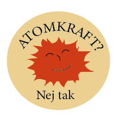

1970'ERNE
Disko og kvindebevægelse
Du er tilbage i kvindebevægelsens årti 1970'erne. På gaden ser du folk i trompetbukser, platformsko og store solbriller. Fra bilerne på gaden med nedrullede vinduer kan du høre disko sangen Stayin' Alive spille for fuld blæs. Omkring dig sker der en modreaktion på det kvindebillede, vi har kendt førhen, nu skal brysterne være frie og kropsbehåringen gro frit.
Frie bryster og langt hår
I 70'erne blev det naturlige look moderne, kvindernes kroppe blev 'sat fri', makeuppen forsvinder, bh'en smides, og håret får lov til at vokse. Derudover så man mange slanke kvinder med lange ben og flade maver.
